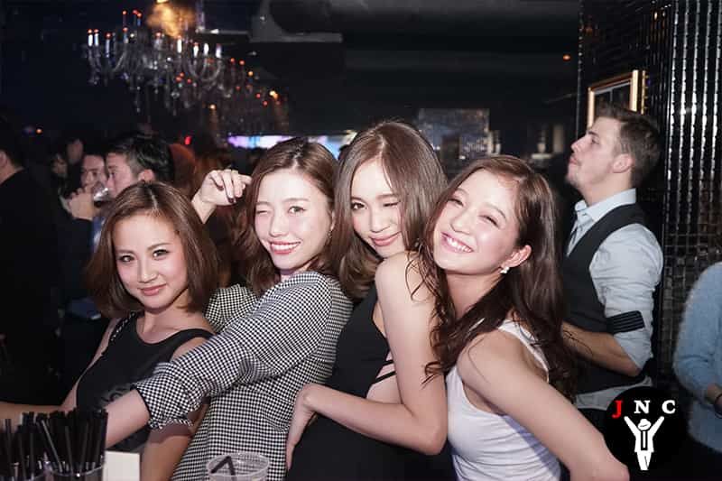

After extensive traveling throughout pretty much all of East Asia, in conjunction with in depth cultural studies, it is my intent to occasionally shed light on the region and what it has to offer. ROK readers may have noticed my articles on South Korea, North Korea, Singapore, Taiwan, Japan, and the Philippines, of which the largest share have specifically concentrated on game and culture.

The current article is no different, but in this piece I will offer a regional overview and add a number of locations, such as Hong Kong and Indonesia, as well as some more recent insights. Although there is no consensus in this regard, I have left out a number of countries such as China, Vietnam, Thailand, and Malaysia. I think that all these are pretty great travel destinations but one has to make a selection. Furthermore, there is some evidence to suggest that China and Vietnam are a bit too conservative (in this context meaning harder to get easy lays), Thailand too exploited, and Malaysia too Islamic. In any case I think that the included destinations are better if one takes into account the totality of experience.
I have also added a number of specific clubs and apps that will make a person with limited time cut to the chase. The aim is to inspire a male to make the more or less optimal East Asian trip, hopefully already this summer. Although I am a strong proponent of “Apollonian” culture, this lean towards ”Dionysian” stuff like having fun – drinking, meeting girls and so on. To avoid any kind of misunderstanding, the tips are all related to sex without prostitution. Everyone has to keep their eyes open for pros, semi-pros, amateur hookers, or whichever proper category they belong to, but I have mentioned locations that overall generally have much less so.
Geographically it is reasonable to distinguish between Northeast and Southeast Asia. Yet culturally, due to large overlaps between countries, it is relevant to call the larger region East Asia. Flight distances range from one hour up to five hours, obviously depending on destination, so it is wise to check out Air Asia or some other proper airline in order to prebook most or all flights.
Preparatory pipelining and online game

A key component in current times is to make preparatory online game, often called pipelining. By using different apps and websites one can make matches and go on several dates upon arrival. Perhaps three dates per day in each city make up a reasonable guideline, but some spontaneity and variation can of course also be valuable.
While most of these tools hinge on picture-related matches and brief text messages before meeting, it is wise to use a computer camera in order to screen at least a number of girls before departure. Additionally, a language learning app such as HelloTalk offers a decent complement, and increases the get-to-know factor. If you want to be a generalist and create a positive feedback loop between online game, social circle game and night game, that is one way to do it. If you pay a small amount to HelloTalk, you can write messages to all nationalities, regardless of which language you and they prefer to learn or conversate in.
If you chat with let’s say 25-50 girls simultaneously and inform them about your arrival, then you can select the best-looking and have a number of dates or meetings. One or two initially platonic encounters, can easily turn into sex if one pushes the biomechanical lever in the right order. That is exactly what happened to me in Seoul last year.
Needless to say, the more language you can speak (more or less) the better, but in all locations listed below English will take you far with girls who have a cosmopolitan mindset (which most tend to have these days). As long as you strive for to absorb new words and phrases in the respective native tongue and positively stand out from the typical tourist crowd, things will generally not be to your disadvantage.
Hongdae and Gangnam in Seoul, South Korea
Most males who travel extensively tend to agree that Seoul is one of the best cities in the world in this respect. Although far from the most optimal place for picking up hot girls, who can be flaky or simply not worth the time and effort, the city has a nice vibe and is just great to spend time in, especially in June. For instance, I love to hang out at the major entertainment offices in Gangnam where you can often run into female K-pop artists. From Cheongdam Station (exit 6) one can reach S.M. Entertainment’s head office building.
Drinking-wise, Hongdae is perfect on Thursdays in particular. Go meet people at the Hongdae Playground, drink some soju, and then head to Thursday Party. Keep approaching and eventually you should end up in a packed club like M2.
The more fancy Gangnam on the other hand is better on weekends, although it is reasonable to go there on most weekdays too. Club Octagon (Hakdong Station), Arena and Answer are worthwhile for the high quality, although it might be difficult to pick up the hottest chicks. But a 7 or 8 is not bad either.
Apps: Kakoa Talk, HelloTalk, Tinder
Tokyo and Osaka in Japan

Although smaller cities in Japan may have their charm, it is safe to say that Tokyo and Osaka rule the land of the rising sun. Specifically the areas Shibuya and Roppongi in Tokyo offer the best clubs, such as Womb and V2. There you will find a proper balance between foreigners and locals. Also make sure to visit Shibuya 109 and have a chitchat with the pretty female staff. Osaka has for instance Ghost Ultra Lounge in its much smaller city pocket.
If time is limited, skip Osaka and go all in for Tokyo. Try to go no later than early July, since you do not want to experience seasonal sky fall.
Apps: HelloTalk, Tinder
Lan Kwai Fong in Hong Kong
Hong Kong is nice to spend time in, for example in July, and if you have a couple of days you can also go to one of the city’s beaches or even to Macau and investigate the latest lavish casino building. Why not go to the beach with one of the girls whom you met online?
Party-wise, the street Lan Kwai Fong is great for male travelers. Although packed with drunk Brits and mate-guarding Chinese betas, it is definitely worthwhile, even on a weekday. If you just have some game, looks and/or social connection it is relatively easy to make out with or bang a local 6 or 7. If a girl was truly socially conservative she would not go out and get drunk.
Apps: Happn, Bumble, HelloTalk, Tinder
Taipei in Taiwan
As previously asserted, Taiwan is a great country for scenery and culture, but the capital Taipei nevertheless offers a significant number and share of 6-8s who tend to show up in clubs such as Elektro, located at the front of Taipei 101 Tower. Be sure to be there on a Friday and Saturday.
Apps: Praktor, HelloTalk, Tinder
Singapore

As an expensive city-state, Singapore is best to make a quick stop in. Besides from online connections, go and meet some Sarong Party Girls at Zouk, ranked 4 in the world in DJ Mag.
Apps: Happn, HelloTalk, Tinder
Jakarta and Bali in Indonesia
Jakarta is much dirtier and poorer than the above-mentioned locations. Hence expect a major negative contrast with regard to material welfare. However, with about 20 million inhabitants you will also have an enormous pool of feminine locals at your disposal, of which far from all, or even most, are conservative Muslims.
In fact, from the totality of evidence from the Roosh V Forum, my own and other travelers’ experiences, it is likely that a Western male will hack all the way through to willing girls’ middle regions. Apart from online hustling, X2 might be worth a visit. Online game and night game will likely be more than enough.
In Bali it is perhaps even easier, on average, to get laid with local chicks. Bounty Discotheque and Skygarden in Kuta are two good options. The only real obstacle is the hotel guards who are often hesitant to let your temporary light-brown lover in.
Apps: Indonesian Cupid, HelloTalk, Tinder
Cebu in the Philippines

Since I have already dealt with Cebu in the Philippines in a previous article, I will just briefly add that before you focus on local girls, be sure to swim next to the whale sharks in Oslob. That is perhaps even better than to fool around in clubs. With regard to the latter, Liv Super Club in Mandaue City is a proper night spot.
Apps: Filipono Cupid, Pina Love, HelloTalk, Tinder
In summary
Overall East Asia is a great region for male pleasure, whether solely focused on meeting females or just having a good time, alone or with friends. If time is limited I would suggest Seoul, Tokyo, Cebu and Jakarta, whereas Osaka, Hong Kong, Taiwan, Singapore and Bali can be regarded as secondary destinations.
Read More: 5 Types Of Malaysian Girls Found In Kuala Lumpur